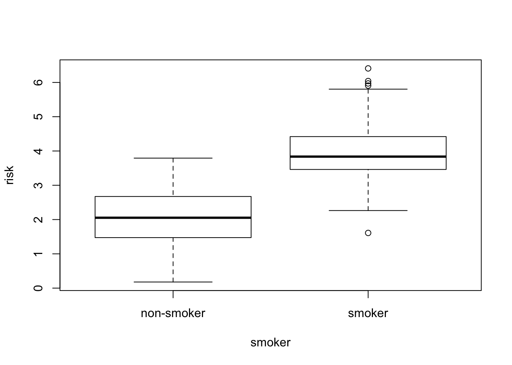

While R has many different data types, the one that is central to much of the power and popularity of R is the data.frame. A data.frame looks a bit like an R matrix in that it has two dimensions, rows and columns. However, data.frames are usually viewed as a set of columns representing variables and the rows representing the values of those variables. Importantly, a data.frame may contain different data types in each of its columns; matrices must contain only one data type. This distinction is important to remember, as there are specific approaches to working with R data.frames that may be different than those for working with matrices.
The data used here are borrowed directly from the fantastic Bioconnector tutorials and are a cleaned up version of the data from Brauer et al. Coordination of Growth Rate, Cell Cycle, Stress Response, and Metabolic Activity in Yeast (2008) Mol Biol Cell 19:352-367. These data are from a gene expression microarray, and in this paper the authors examine the relationship between growth rate and gene expression in yeast cultures limited by one of six different nutrients (glucose, leucine, ammonium, sulfate, phosphate, uracil). If you give yeast a rich media loaded with nutrients except restrict the supply of a single nutrient, you can control the growth rate to any rate you choose. By starving yeast of specific nutrients you can find genes that:
The dataset can be downloaded directly from:
We are going to read this dataset into R and then use it as a playground for learning about data.frames.
R has many capabilities for reading in data. Many of the functions have names that help us to understand what data format is to be expected. In this case, the filename that we want to read ends in .csv, meaning comma-separated-values. The read.csv() function reads in .csv files. As usual, it is worth reading help('read.csv') to get a better sense of the possible bells-and-whistles.
The read.csv() function can read directly from a URL, so we do not need to download the file directly. This dataset is relatively large (about 16MB), so this may take a bit depending on your network connection speed.
ydat <- read.csv('http://bioconnector.org/data/brauer2007_tidy.csv')Our variable, ydat, now “contains” the downloaded and read data. We can check to see what data type read.csv gave us:
class(ydat)## [1] "data.frame"Our ydat variable is a data.frame. As I mentioned, the dataset is fairly large, so we will not be able to look at it all at once on the screen. However, R gives us many tools to inspect a data.frame.
head() to show first few rowstail() to show last few rowsdim() for dimensions (rows, columns)nrow()ncol()object.size() for power users interested in the memory used to store an objectcolnames() to get the names of the columnsrownames() to get the “names” of the rows–may not be presentsummary() to get per-column summaries of the data in the data.frame.head(ydat)## symbol systematic_name nutrient rate expression
## 1 SFB2 YNL049C Glucose 0.05 -0.24
## 2 <NA> YNL095C Glucose 0.05 0.28
## 3 QRI7 YDL104C Glucose 0.05 -0.02
## 4 CFT2 YLR115W Glucose 0.05 -0.33
## 5 SSO2 YMR183C Glucose 0.05 0.05
## 6 PSP2 YML017W Glucose 0.05 -0.69
## bp mf
## 1 ER to Golgi transport molecular function unknown
## 2 biological process unknown molecular function unknown
## 3 proteolysis and peptidolysis metalloendopeptidase activity
## 4 mRNA polyadenylylation* RNA binding
## 5 vesicle fusion* t-SNARE activity
## 6 biological process unknown molecular function unknowntail(ydat)## symbol systematic_name nutrient rate expression
## 198425 DOA1 YKL213C Uracil 0.3 0.14
## 198426 KRE1 YNL322C Uracil 0.3 0.28
## 198427 MTL1 YGR023W Uracil 0.3 0.27
## 198428 KRE9 YJL174W Uracil 0.3 0.43
## 198429 UTH1 YKR042W Uracil 0.3 0.19
## 198430 <NA> YOL111C Uracil 0.3 0.04
## bp
## 198425 ubiquitin-dependent protein catabolism*
## 198426 cell wall organization and biogenesis
## 198427 cell wall organization and biogenesis
## 198428 cell wall organization and biogenesis*
## 198429 mitochondrion organization and biogenesis*
## 198430 biological process unknown
## mf
## 198425 molecular function unknown
## 198426 structural constituent of cell wall
## 198427 molecular function unknown
## 198428 molecular function unknown
## 198429 molecular function unknown
## 198430 molecular function unknowndim(ydat)## [1] 198430 7nrow(ydat)## [1] 198430ncol(ydat)## [1] 7colnames(ydat)## [1] "symbol" "systematic_name" "nutrient" "rate"
## [5] "expression" "bp" "mf"summary(ydat)## symbol systematic_name nutrient rate
## AAC1 : 36 Q0017 : 36 Ammonia :33141 Min. :0.0500
## AAD10 : 36 Q0045 : 36 Glucose :33138 1st Qu.:0.1000
## AAD14 : 36 Q0050 : 36 Leucine :33178 Median :0.2000
## AAD16 : 36 Q0055 : 36 Phosphate:33068 Mean :0.1752
## AAD4 : 36 Q0065 : 36 Sulfate :32897 3rd Qu.:0.2500
## (Other):151000 Q0070 : 36 Uracil :33008 Max. :0.3000
## NA's : 47250 (Other):198214
## expression bp
## Min. :-6.500000 biological process unknown : 45139
## 1st Qu.:-0.290000 protein biosynthesis : 6654
## Median : 0.000000 protein amino acid phosphorylation* : 2792
## Mean : 0.003367 protein biosynthesis* : 2624
## 3rd Qu.: 0.290000 cell wall organization and biogenesis*: 2303
## Max. : 6.640000 (Other) :131255
## NA's : 7663
## mf
## molecular function unknown : 65280
## structural constituent of ribosome: 6723
## protein binding : 3981
## RNA binding : 2442
## protein binding* : 1903
## (Other) :110438
## NA's : 7663In RStudio, there is an additional function, View() (note the capital “V”) that opens the first 1000 rows (default) in the RStudio window, akin to a spreadsheet view.
View(ydat)In R, data.frames can be subset similarly to other two-dimensional data structures. The [ in R is used to denote subsetting of any kind. When working with two-dimensional data, we need two values inside the [ ] to specify the details. The specification is [rows, columns]. For example, to get the first three rows of ydat, use:
ydat[1:3, ]## symbol systematic_name nutrient rate expression
## 1 SFB2 YNL049C Glucose 0.05 -0.24
## 2 <NA> YNL095C Glucose 0.05 0.28
## 3 QRI7 YDL104C Glucose 0.05 -0.02
## bp mf
## 1 ER to Golgi transport molecular function unknown
## 2 biological process unknown molecular function unknown
## 3 proteolysis and peptidolysis metalloendopeptidase activityNote how the second number, the columns, is blank. R takes that to mean “all the columns”. Similarly, we can combine rows and columns specification arbitrarily.
ydat[1:3, 1:3]## symbol systematic_name nutrient
## 1 SFB2 YNL049C Glucose
## 2 <NA> YNL095C Glucose
## 3 QRI7 YDL104C GlucoseBecause selecting a single variable, or column, is such a common operation, there are two shortcuts for doing so with data.frames. The first, the $ operator works like so:
# Look at the column names, just to refresh memory
colnames(ydat)## [1] "symbol" "systematic_name" "nutrient" "rate"
## [5] "expression" "bp" "mf"# Note that I am using "head" here to limit the output
head(ydat$symbol)## [1] SFB2 <NA> QRI7 CFT2 SSO2 PSP2
## 4210 Levels: AAC1 AAC3 AAD10 AAD14 AAD16 AAD4 AAD6 AAH1 AAP1 AAP1' ... ZWF1# What is the actual length of "symbol"?
length(ydat$symbol)## [1] 198430The second is related to the fact that, in R, data.frames are also lists. We subset a list by using [[]] notation. To get the second column of ydat, we can use:
head(ydat[[2]])## [1] YNL049C YNL095C YDL104C YLR115W YMR183C YML017W
## 5536 Levels: Q0017 Q0045 Q0050 Q0055 Q0060 Q0065 Q0070 Q0075 Q0080 ... YPR204WAlternatively, we can use the column name:
head(ydat[["systematic_name"]])## [1] YNL049C YNL095C YDL104C YLR115W YMR183C YML017W
## 5536 Levels: Q0017 Q0045 Q0050 Q0055 Q0060 Q0065 Q0070 Q0075 Q0080 ... YPR204WSometimes it is useful to combine related data into one object. For example, let’s simulate some data.
smoker = factor(rep(c("smoker", "non-smoker"), each=50))
smoker_numeric = as.numeric(smoker)
x = rnorm(100)
risk = x + 2*smoker_numericWe have two varibles, risk and smoker that are related. We can make a data.frame out of them:
smoker_risk = data.frame(smoker = smoker, risk = risk)
head(smoker_risk)## smoker risk
## 1 smoker 3.898524
## 2 smoker 3.576775
## 3 smoker 5.971214
## 4 smoker 4.916932
## 5 smoker 3.477607
## 6 smoker 6.040769R also has plotting shortcuts that work with data.frames to simplify plotting
plot( risk ~ smoker, data=smoker_risk)
Once we have a data.frame of interest, we may want to save it. The most portable way to save a data.frame is to use one of the write functions. In this case, let’s save the data as a .csv file.
write.csv(smoker_risk, "smoker_risk.csv")